|
Finding the Magic Byte:
I want to start with a little information on what a magic byte represents. The magic byte is also called a Boolean variable. A boolean variable can only have two values: 1 or 0. When writing a computer program you often times want to represent something as TRUE or FALSE. The easiest way to do this is by creating a boolean variable and setting it equal to 0 for False and 1 for True. In this particular program the boolean variable determines whether or not we are registered. So the Magic Byte (Boolean Variable) will be equal to 0 (False) if we are not registered and equal to 1 (True) if we are registered. This type of protection was first introduced to you in Beginner Olly Tutorial Part7 by MaDMAn H3rCuL3s. MaDMAn H3rCuL3s showed you how to find the Boolean Variable by using memory breakpoints. In this tutorial we will use Hardware breakpoints and there will be more than one location we need to patch.
Okay, now that we know what a Magic Byte is, lets start reversing. Open up MP3 Cutter Joiner in Ollydbg. You should be at the OEP:
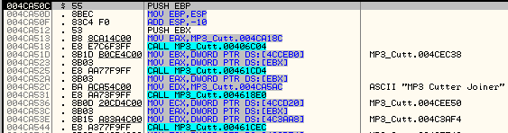
Figure 1
We are going to begin by seeing if we can locate any interesting strings that may help us reverse this program. Right-Click and choose Search for->All Referenced Text Strings. You should see the following:
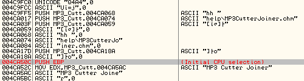
Figure 2
We are going to search for a common word that may help us reverse this program: "register". Right-Click->Search for Text and in the box that comes up type "register" without the quotes. UNcheck Case Sensitive and Check Entire Scope. You'll first break on "RegisterAutomation".
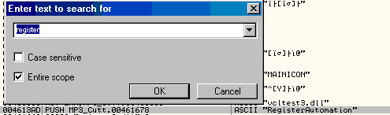
Figure 3
That isn't useful. So press CTRL+L to search for the next occurrence of "Register". You will break on "tfm_register". That isn't good either. Continue to press CTRL+L until you see the string: "Sorry, you have converted 30 files. Please register!". (In version 1.08 the string has changed to "Sorry, you have converted 15 files. Please register!") That string looks good, Double-Click it and you will land in the code section. Scroll up until your image matches mine:
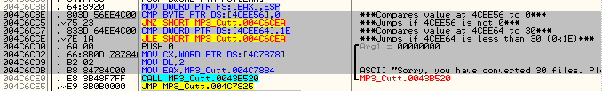
Figure 4
I have commented the code to give you a better idea of what is happening. Looking at the code we see that there are two conditional jumps that can jump over the "Sorry you have.." nag. The last conditional jump we see compares the value at 004CEE64 to 1E. Which we know from previous tutorials to equal 30 in decimal. So we can assume that the value at 004CEE64 is used as a counter of how many conversions we have made. When we reach 30 or 1E the program gives us a nag.
But before we get the the comparison jump; the first jump compares the value at location 004CEE56 to 0. If 004CEE56 is not 01 then we continue to the 1E compare. Now if we are registered there is no reason to ever check how many conversions we have made. So obviously that first conditional jump tests if we are registered. If we aren't then the program will test to see if we have reached the limit of 30 conversions. Well we want the program to always think we are registered. The Byte at location 004CEE56 is determining whether or not we are registered. If we can change that byte we can make the program think we are registered. So, in Olly's dump window Right-Click and choose Go To->Expression and type in 004CEE56. You should see the following:
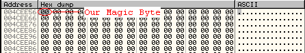
Figure 5
We know that the program will probably test our registration and then write 00 if we are not registered and 01 if we are. We want to try and find out where in the executable 004CEE56 is being written to. We are going to set Olly to break whenever the program writes to location 004CEE56. So choose that BYTE and Right-Click Breakpoint->Hardware, on Access->Byte. The program will now break whenever 004CEE56 is accessed by MP3 Cutter Joiner. For more information on the different types of breakpoints and how to use them be sure you have read Beginner Olly Tutorial Part8 by Shub Nigurrath
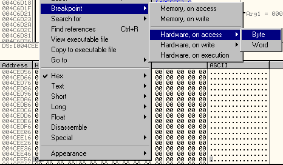
Figure 6
We have our breakpoint set on the magic byte. So we can now press RUN and allow the program to load. You should break at the following location. I added a comment, we can see that the program initializes by writing 0 to 004CEE56. Scroll up until your code matches mine:
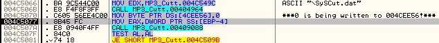
Figure 7
The program begins by writing a 0 to 004CEE56, that is somewhat smart programming. If the program wrote a 01 to the code location we could bypass the registration scheme and be registered. Let's start by modifying the program to do just that. We are going to change the program so that it will now write a 1 to our magic byte location. Select 004C5070 and press SPACE to Assemble the line. In the box that comes up change MOV BYTE PTR DS:[4CEE56],0 to MOV BYTE PTR DS:[4CEE56],1 and press Assemble. Your code should now look like this:
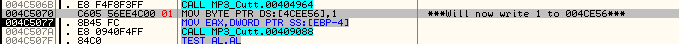
Figure 8
Since we have already executed the MOV BYTE PTR DS:[4CEE56],0 our magic byte is currently set to 0. So we want to change our Magic Byte to a 01 also. In Olly's dump window, select the BYTE at 004CEE56 and press SPACE. In the box that comes up change the 00 in the HEX section to 01. Press OK to save what you changed.
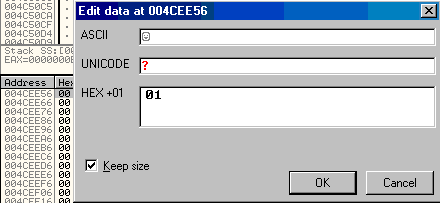
Figure 9
Before we continue, we are going to think logically. We see by the code in front of us that the program initializes itself by writing 0 to our Magic Byte. However, by looking at the code we see that there are no conditional jumps around so the program is going to write 0 if we are registered or not. This means somewhere else in the code the program tests if we are registered. It will then decide to write a 0 or a 1 on top of our Magic Byte.
Through testing this program I found that our hardware breakpoint does not break the next time our magic byte is accessed. And if we use a Memory Breakpoint as we did in MaDMAn H3rCuL3s' tutorial we will encounter an exception in the program. I will explain why this happened in a few paragraphs. To find where the program writes the 0 or 1 we are going to step through the next couple lines of code. Keep an eye on the Magic Byte in Olly's dump window. Now press F8 to start stepping through the code. After each time you press F8 look at the Magic Byte and make sure it is still 01. Stop pressing F8 when you see it change back to 00. You should be at CMP BYTE PTR DS: [4CEE56],0 when 004CEE56 changes back to 00:
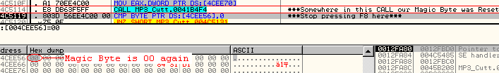
Figure 10
Somehow the program changed our Magic Byte back to 00. And it happened inside CALL MP3_Cutt.0041B4F4. We are going to find out where in that CALL our Magic Byte was changed. Select CALL MP3_Cutt.0041B4F4 and press F2 to set a breakpoint on that CALL. Okay we can remove our Hardware breakpoint by selecting the DEBUG menu and choosing HARDWARE BREAKPOINTS from the dropdown menu. A window will open up with the Hardware Breakpoints you have set. Press the DELETE button next to any breakpoints that are set and press OK. Now, Restart MP3 Cutter Joiner in Olly.
When our program is at the OEP, choose VIEW from Olly's menu and from the dropdown menu choose PATCHES.
The Patches window in Olly saves all the changes we made to the code. Instead of trying to find where the program wrote 0 to our Magic Byte again and fixing it again, we can look at the Patches menu and fix it there. In the Patches window choose 004C5070 and press SPACE this will activate the patch:
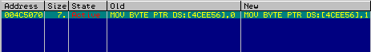
Figure 11
With our changes now activated close the Patches window and go ahead and press RUN to start MP3 Cutter Joiner.You will break on our CALL MP3_Cutt.0041B4F4. Let's take a look at our Magic Byte; In Olly's dump window Right-Click and choose Go To->Expression and type in 004CEE56. You will see that our Magic Byte is currently 01. That's good, our patch worked so far. Okay, press F7 to step into CALL MP3_Cutt.0041B4F4. You should be here:
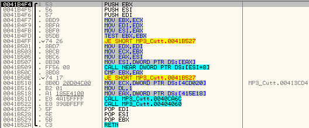
Figure 12
Continue to press F7 and when you reach CALL NEAR DWORD PTR DS:[ESI+8] you should Step Into the CALL and be at the following code: If you code does not look like mine you need to remove the Analysis. Right-Click choose Analysis->Remove Analysis from Module
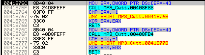
Figure 13
We are going to continue stepping Into the CALL's until we find where our magic byte is being overwritten. Press F7 twice and you will have Stepped Into the CALL MP3_Cutt.00408F88. Continue to press F7 until you reach LEA EAX,DWORD PTR SS:[ESP+4] You should be here:
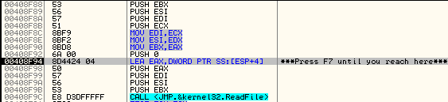
Figure 14
Because Olly can get confused sometimes we had to remove the code analysis. When Ollydbg applies analysis sometimes it doesn't always get the ASM functions correct. Sometimes it will mistake a series of functions for an ASCII word. When this happens we end up seeing junk code as you saw. We can remove the analysis to help us step through the code. But when we are finished stepping through the code it is best to reaplly the analysis to help us understand what is happening. Since we are outside of the junk code we can now reapply the Analysis. Press CTRL+A to Analyze the code again. Your code should now look like this:
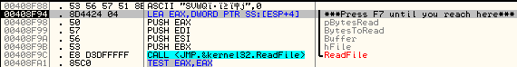
Figure 15
After applying the Analysis we see that we have a call to ReadFile coming up. The function of ReadFile can be found in the Windows API. See Figure 16. Basically ReadFile reads a certain amount of bytes from an address location and it then writes those bytes to a new location. Looking at Figure 16 we can say that ReadFile reads nNumberOfBytesToRead from lpAddressOfBytesRead and it then writes those BYTES into the lpBuffer.
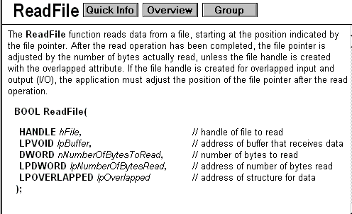
Figure 16
How does the Windows ReadFile know what bytes to read/write? We encountered this in Beginner Tutorial #3 when we modified the MessageBox function in L0pht5. nNumberOfBytesToRead, lpAddressOfBytesRead, lpBuffer, hFile, and lpOverlapped are al variables called Arguments and they are defined by the program calling the function.When a program wants to use an Windows API function it has to pass the function values for each of the functions arguments. However it is important to know that there are two "classic" ways that arguments are passed to API functions. These two methods of passing arguments are called the C Calling Convention and the PASCAL Calling
Convention.
The function ReadFile's arguments look like this:
ReadFile (hFile, lpBuffer, nNumberOfBytesToRead, lpNumberOfBytesRead, lpOverlapped)
To pass these arguments to the function we need to PUSH them onto the stack. The Calling Convention determines in what order variables are PUSHed onto the stack.
The C calling convention PUSHes arguments from Right to Left.
Using the C Calling Convention variables would be passed like so:
PUSH lpOverlapped
PUSH lpNumberOfBytesRead
PUSH nNumberOfBytesToRead
PUSH lpBuffer
PUSH hFile
CALL Kernel32.ReadFile
The PASCAL calling convention is the opposite of the C Calling Convention. The PASCAL calling convention passes arguments from Left to Right. Using the PASCAL Calling Convention variables would be passed like so:
PUSH hFile
PUSH lpBuffer
PUSH nNumberOfBytesToRead
PUSH lpNumberOfBytesRead
PUSH lpOverlapped
CALL Kernel32.ReadFile
By looking at the registers in Olly we can determine the arguments that will be PUSHed onto the stack and what those values mean to the ReadFile function. We can even determine that this program uses the C Calling Convention
PUSH EAX: The ADDRESS to READ the BYTES FROM is EAX: pNumberOfBytesRead = EAX = 0012FA58
PUSH EDI: The NUMBER of BYTES to READ is EDI: nNumberOfBytesToRead = EDI = 00000001
PUSH ESI: Where The BYTES will be WRITTEN is ESI: lpBuffer = ESI = 004CEE56 ***OUR MAGIC BYTE LOCATION!***
PUSH EBX: The HANDLE to the FILE is EBX: hFile = EBX = 00000190
I hope all of that made sense. If you are having a hard time following just press F7 until you reach CALL <JMP.&kernel32.ReadFile>. Look at the stack window and you will see that the values have filled themselves in:
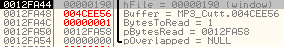
Figure 17
Looking at the stack we can see that ReadFile will read only 1 byte and then wrote that byte to 004CEE56.
If you remember back I told you that when I set a memory breakpoint on 004CEE56 it threw an exception. Well, this is why. The program used ReadFile to write overtop of our magic byte. However, when a memory breakpoint is set it effectively "reserves" that byte. When it a program tries to access that byte the breakpoint traps that instruction and throws an exception telling the debugger to stop. In this case the memory breakpoint was trying to trap the attempts to write to that location, but when ReadFile tried to write to there, it failed and threw an exception in the ReadFile function rather than in the debugger. This is why we had to step through the code rather than relying on a breakpoint. Now, from the last time we ran the program we know that MP3 Cutter Joiner will overwrote our Magic Byte at 004CEE56 with 00. It did it by using the windows API function ReadFile. We don't want our Byte to be overwritten! There is an easy and elegant fix for this.
Right now the BYTES are being read from EAX and written to ESI. What if we changed the values so that ReadFile read the values from the same place it was writing them to? It would basically make ReadFile do nothing. We can easily do this by changing the register that is PUSHed as the Buffer. We are going to change them so it reads and writes to EAX. Select the PUSH ESI in Olly and press SPACE to Assemble. In the box that opens up change PUSH ESI to PUSH EAX and press Assemble. Your code should now look like this:
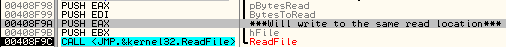
Figure 18
The program will not overwrite our Magic Byte anymore. So we should always be registered. Okay, now that we have made that modification; Restart MP3 Cutter Joiner in Olly. When you are at the beginning of the program, apply both Patches from the Patch Window. Go ahead and press RUN...
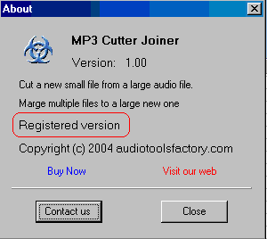
Figure 19
We did it! We located the Magic Byte. We found out where the program was overwriting the Magic Byte and fixed it to stop overwriting it. Finally we successfully made the program think it is registered by manipulating the Magic Byte to always equal 1.
Further Analysis and Patching:
For all purposes we have defeated the Magic Byte protection scheme. However in this second part we will delve deeper into the program to try and better understand the protection. Let us review what we know about the programs protection:
The program uses a boolean variable to store our registration information
The boolean variable is located at the offset 004CEE56
The program initially writes a 0 to the magic byte location
The program then reads a byte from a second file and writes that byte overtop of our magic byte
There are many weaknesses in this protection scheme. We have already patched the program to write a 1 to the boolean variable location. We then disabled the ReadFile function that was overwriting our magic byte. However there is another weakness in this protection that we have not covered. Instead of patching the program we can instead locate the file that our "unregistered" byte is read from. If we were able to find and patch this second file we could change the 0 in it to a 1. There would be no need for any patching of our original program. This is exactly what we are going to do in this second section.
The first thing we need to do is try and locate the file accessed by ReadFile. To do this we need to learn a little about how the Windows API accesses files. We already learned about how ReadFile works, but ReadFile depends on variables supplied by other Windows API functions. One of the first parameters required by ReadFile is hFile. Looking back at Figure 16 we see that hFile is the handle of the file to read. Well, where does that handle come from and how is it assigned? Before any program can read from or write to a file, Windows first needs to open that specific file. Assume you wrote a program and wanted to open File1 and copy it to File2. Windows opens File1 and assigns it a unique identifier called a handle it then does the same for File2. You can now pass the handle of File1 as a parameter to the ReadFile function. Once Windows reads in the information of File1 you can pass File2's handle to WriteFile. Now windows will write your information to the File identified by the File2 handle. If you switched the handles for File1 and File2, the program would then do the opposite.
We know why the file handle is important, now we need to know where Windows assigns that handle. Windows assigns file handles through the CreateFile API function. Don't be confused, even though the API is called CreateFile it is also used to open already existing files. We can learn more about CreateFile online, Microsoft is kind enough to document most of it's API functions on the internet in what is called the MSDN or Microsoft Developers Network. The CreateFile function is explained here: http://msdn.microsoft.com/library/default.asp?url=/library/en-us/fileio/fs/createfile.asp
- The CreateFile function creates or opens a file, file stream, directory, physical disk, volume, console buffer, tape drive, communications resource, mailslot, or named pipe. The function returns a handle that can be used to access an object.
Since the file handle is unique to each opened file. If we know the file handle then we can easily figure out what file it corresponds to.
I think we know everything we need to know right now. So let's begin by opening the original MP3 Cutter Joiner in Olly. When we are at the OEP we are going to put breakpoints on every call to the CreateFile API functions.
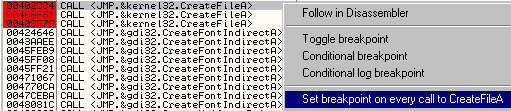
Figure 20
Now that we have our breakpoints set go ahead and press RUN. The program will load and you should eventually break here:
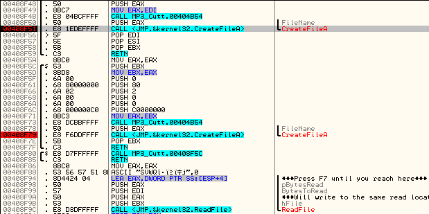
Figure 21
If you look down a little bit you can see the CALL to ReadFile that overwrites our Magic Byte. So we know we are in the right place. Look at the stack to determine the arguments that are being passed to CreateFileA:
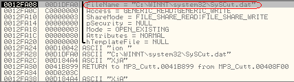
Figure 22
On the stack you see the argument "FileName" with the value "C:\WINNT\System32\SysCut.dat". So we know that the file to be opened or created is going to be SysCut.dat. Well how are we going to find the Handle that CreateFile assigns? Hopefully, if you read Beginner Tutorial #5 you know that the Windows API functions most commonly return their values through EAX. To get the FileHandle for SysCut.dat all we need to do is execute the CreateFileA function and then look at the value in EAX. Let's do that.
Press the Step Over button One time. CreateFileA should execute and you should be on POP EDI. Now take a look at the Registers Window:
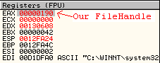
Figure 23
The value of the FileHandle for SysCut.dat in my case is 00000190. Now we need to see if this is the same file that is being accessed by ReadFile. Scroll down and set a breakpoint on the CALL <JMP.&kernel32.ReadFile>:
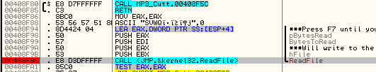
Figure 24
Now Press RUN. You should break on CALL <JMP.&kernel32.ReadFile>. Look at the Stack in Olly to see the arguments for this call to ReadFile:
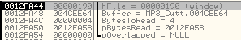
Figure 25
Take a look at hFile it equals the FileHandle for SysCut.dat. ReadFile is accessing SysCut.dat! However, look at the value for Buffer and the number of BytesToRead. Our Magic Byte isn't being overwritten, instead 4 BYTES are being Read from SysCut.dat and written to 004CEE64. ReadFile is obviously being called more than once. Make a note of the fact that 4 Bytes are being read.
Okay let's press RUN again and try and find when our Magic Byte is being overwritten.
You should break on ReadFile again. This time the stack looks like we expected it to:
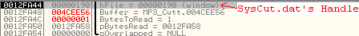
Figure 26
We have now confirmed that SysCut.dat is the file that holds our registration information. By looking at the stack we see that 1 Byte from SysCut.dat is being used to overwrite our Magic Byte. If we can patch that one byte we can make the program run as registered without changing any patching of the executable at all!
Just to be safe, Press Run again and see if SysCut.dat is accessed again... No, it is not. We can now move on to patching SysCut.dat.
Locate SysCut.dat in you System32 folder, and open it up with HexWorkshop. The first thing you will notice is that it is only 5 Bytes:
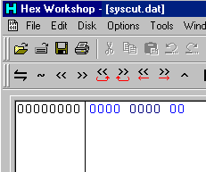
Figure 27
Currently SysCut.dat is all 00's, we need to change one of those 00's into a 01. But which one? Well, our first ReadFile accessed 4 Bytes and our second ReadFile accessed only 1 Byte, that was our registration byte. This means that the first 4 Bytes of SysCut.dat are used elsewhere in the program but the 5'th byte in SysCut.dat represents whether or not we are registered. If we change the 5'th Byte in SysCut.dat to a 01. Hopefully we will be registered.
Position your cursor just before the last byte in SysCut.dat and type 01. The file should now look like this:

Figure 28
Choose File->Save and overwrite the original SysCut.dat. We can now test out our ORIGINAL MP3 Cutter Joiner.exe and see if it is registered...
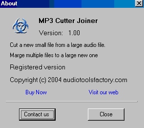
Figure 29
Excellent! We used our knowledge of the Windows API to locate our Magic Byte. We found what file the magic byte was located in, and exactly where in the file it was located. We then successfully registered the program without changing a single byte of the original executable!
You may come across other programs that use a boolean variable to check registration, whether the Magic Byte is located in the executable or in a separate file, hopefully you will be able to apply what you learned here to other targets. |

{kind=link}
{kind=link}
{kind=link}
{kind=link}
{kind=link}
{kind=link}
{kind=link}
{kind=link}
{kind=link}
{kind=link}
{kind=link}
{kind=link}
{kind=link}
{kind=link}
{kind=link}
{kind=link}
{kind=link}
{kind=link}
{kind=link}
{kind=link}
{kind=link}
{kind=link}
{kind=link}
{kind=link}
{kind=link}
{kind=link}
{kind=link}
{kind=link}
{kind=link}
{kind=link}